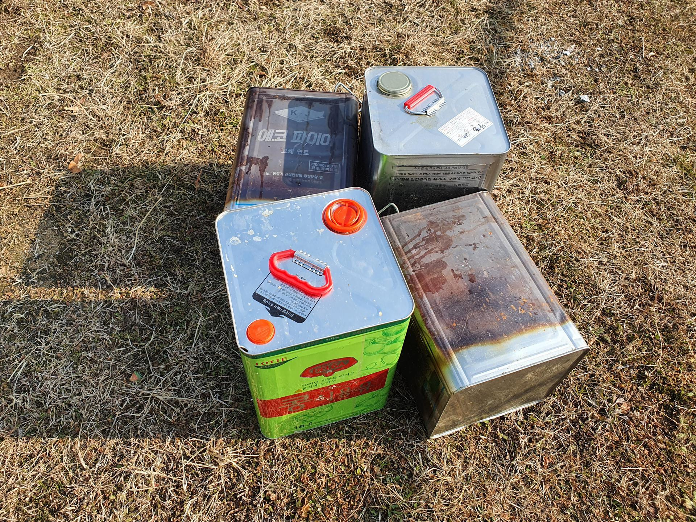

{% extends "backend/layout/base.html" %}
{% load static %}
{% block content %}
    <input id='csrf_token' value='{{ csrf_token }}' hidden>
    <script src="https://cdn.jsdelivr.net/npm/exif-js"></script>
    <script src="https://cdn.jsdelivr.net/d3js/3.5.9/d3.min.js"></script>
    <script src="https://cdnjs.cloudflare.com/ajax/libs/color-thief/2.3.0/color-thief.umd.js"></script>
    
    <button id="btn" onclick="pick()">색상 추출</button>
    <div style="width:100px; height:100px; border-radius:50%;" id='c1'></div>
    <p>
        <input type='button' value='Crop' onclick='CropImage();'/>
        <button id="btn" onclick="pick2()">색상 추출</button>
    <div style="width:100px; height:100px; border-radius:50%;" id='c2'>11</div>
    <canvas id="myCanvas" style="display: none;"></canvas>
    
    <button onclick="check()">check</button>
    <form>
        <input type="button" value="add" onclick="polygonStart()"/>
        <input type="button" value="remove" onclick="polygonDelete()"/>
    </form>


{% endblock %}


{% block javascript %}
    <script>
        // global vars
        var dragging = false, drawing = false, startPoint, drawable = false;
        var objIndex = 0;
        var svg = d3.select('body').append('svg')
            .attr('height', '700px')
            .attr('width', '1000px');

        svg.append('image')
            .attr('xlink:href', '../../../media/01_X001_C058_1228_0.jpg')
            .attr('x', '0')
            .attr('y', '0')
            .attr('width', '1000px')
            .attr('height', '700px')
            .attr('id', 'samimg')
        ;

        /* 추가 */
        var path, pathArray = [], isClicking = false, firstClick = true, count = 4,
            m1, m2, x, y, lastX, lastY, pathDict = {}, polygonArray = [];
        var dragP = d3.behavior.drag().on('drag', dragPath);

        function dragPath(dataSource) {
            console.log('dragPath', dataSource);

            var e = d3.event;

            pathArray.forEach(function (datum, index) {
                datum.x += e.dx;
                datum.y += e.dy;
            });
            updatePath();
            updateCircle();
        }

        function updatePath() {
            if (!path) {
                path = svg.append('path');
            }

            path.attr('d', lineFunction(pathArray)).attr('fill', 'black');
        }

        function updateCircle() {
            circle.attr('cx', function (d) {
                return d.x;
            })
                .attr('cy', function (d) {
                    return d.y;
                });
        }

        /* 추가 */


        var select_g;

        var points = [], g;

        // behaviors
        var dragger_c = d3.behavior.drag()
                .on('drag', handleDrag)
                .on('dragend', function (d) {
                    dragging = false;
                }),
            dragger_p = d3.behavior.drag()
                .on('drag', handleDrag2)
                .on('dragend', function (d) {
                    dragging = false;
                });

        svg.on('mouseup', function () {
            if (dragging) return;
            if (!drawable) return;
            //svg.call(dragP)
            drawing = true;
            startPoint = [d3.mouse(this)[0], d3.mouse(this)[1]];
            if (svg.select('g.drawPoly').empty()) {
                g = svg.append('g').attr('class', 'drawPoly');
            }
            if (d3.event.target.hasAttribute('is-handle')) {
                closePolygon();
                return;
            }
            ;

            points.push(d3.mouse(this));

            g.select('polyline').remove();

            var polyline = g.append('polyline').attr('points', points)
                .style('fill', 'none')
                .attr('stroke', '#000');

            for (var i = 0; i < points.length; i++) {
                g.append('circle')
                    .attr('cx', points[i][0])
                    .attr('cy', points[i][1])
                    .attr('r', 6)
                    .attr('fill', 'yellow')
                    .attr('stroke', '#000')
                    .attr('is-handle', 'true')
                    .style({cursor: 'pointer'});
            }
        });

        function closePolygon() {
            svg.select('g.drawPoly').remove();
            var g = svg.append('g')
                .attr('id', 'g_element_' + objIndex)
                .attr('onclick', 'polygonSelect(this)')
            ;

            g.append('polygon')
                .attr('points', points)
                .attr('fill-opacity', '0.5')
                //    .attr('fill', getRandomColor())
                .attr('fill', '#111212')
                .attr('id', 'polygon_' + objIndex)

            for (var i = 0; i < points.length; i++) {

                pathArray[i] = {'x': points[i][0], 'y': points[i][1]};
                var circle = g.selectAll('circles')
                    .data([points[i]])
                    .enter()
                    .append('circle')
                    .attr('cx', points[i][0])
                    .attr('cy', points[i][1])
                    .attr('r', 6)
                    .attr('fill', '#FDBC07')
                    .attr('stroke', '#000')
                    .attr('is-handle', 'true')
                    .style({cursor: 'move'})
                    .call(dragger_p);
            }

            pathDict['g_element_' + objIndex] = pathArray;
            polygonArray.push('polygon_' + objIndex);
            pathArray = [];
            console.log('pathDict', pathDict);
            points.splice(0);

            drawing = false;

            objIndex++;
            drawable = false;
        }

        svg.on('mousemove', function () {

            if (!drawing) return;
            var g = d3.select('g.drawPoly');
            g.select('line').remove();
            var line = g.append('line')
                .attr('x1', startPoint[0])
                .attr('y1', startPoint[1])
                .attr('x2', d3.mouse(this)[0] + 2)
                .attr('y2', d3.mouse(this)[1])
                .attr('stroke', '#53DBF3')
                .attr('stroke-width', 1);
        })

        function handleDrag() {
            var e = d3.event;
            if (drawing) return;
            var dragCircle = d3.select(this), newPoints = [], circle;
            dragging = true;
            var poly = d3.select(this.parentNode).select('polygon');
            var circles = d3.select(this.parentNode).selectAll('circle');
            // 선택된 polygon 에 좌표부여
            dragCircle
                .attr('cx', d3.event.x)
                .attr('cy', d3.event.y);
            //모든 점을 돌며 좌표셋팅
            for (var i = 0; i < circles[0].length; i++) {
                circle = d3.select(circles[0][i]);
                //string -> int 형변환
                let cx = Number(circle.attr('cx'))
                let cy = Number(circle.attr('cy'))
                //e.dx ,e.dy 는 d3이벤트에서 마우스 움직인 정도를 나타냄
                //기존값에서 움직인 좌표만큼은 더한거나 뺴줌
                cx += e.dx
                cy += e.dy
                //점 좌표 update
                circle.attr('cx', cx)
                circle.attr('cy', cy)
                //모든 점에대한 정보를 갖고있는 newPoints 에 업데이트
                newPoints.push([circle.attr('cx'), circle.attr('cy')]);
            }
            // 점 이동시 polygon 새로 그려줌
            poly.attr('points', newPoints);
        }

        function handleDrag2() {
            if (drawing) return;
            var dragCircle = d3.select(this);
            var newPoints = [];
            var circle;
            dragging = true;
            var poly = d3.select(this.parentNode).select('polygon');
            var circles = d3.select(this.parentNode).selectAll('circle');
            // 선택된 점에 좌표부여
            dragCircle
                .attr('cx', d3.event.x)
                .attr('cy', d3.event.y);

            // 선택된 점의 이동한 좌표를 전체 점을 돌면서 points 값(폴리곤 좌표) 재설정
            for (var i = 0; i < circles[0].length; i++) {
                circle = d3.select(circles[0][i]);
                newPoints.push([circle.attr('cx'), circle.attr('cy')]);
            }
            // 재설정 된 polygon 새로 그려줌
            poly.attr('points', newPoints);
        }

        function getRandomColor() {
            var letters = '0123456789ABCDEF'.split('');
            var color = '#';
            for (var i = 0; i < 6; i++) {
                color += letters[Math.floor(Math.random() * 16)];
            }
            return color;
        }

        function polygonStart() {
            d3.selectAll('g').select('polygon').attr('fill', '#111212');
            drawable = true;
        }

        function polygonSelect(obj) {
            select_g = obj;
            d3.selectAll('g').select('polygon').attr('fill', '#111212');
            d3.select(obj).select('polygon').attr('fill', '#008800').call(dragger_c);
        }

        function polygonDelete() {
            // 미선택일 경우 패스
            if (select_g == '') {
                return false;
            }
            console.log('remove ', select_g.id);
            let del_item = 'polygon_' + select_g.id.split("_")[2]
            polygonArray.splice($.inArray(del_item, polygonArray), 1);
            delete pathDict[select_g.id]
            select_g.remove();
            select_g = '';


        }
        var max_x = ''
        var max_y = ''
        var min_x = ''
        var min_y = ''
        function check() {
            let p_list = [];
            //console.log(pathDict);
            //console.log(Object.keys(pathDict));
            //console.log(Object.keys(pathDict).length);
            let point=''
            for (let i = 0; i < polygonArray.length; i++) {
                point =$('#' + polygonArray[i]).attr('points')
                p_list.push(point);

            }
            point = point.split(",")
            let x =[];
            let y =[];
            for(let i=0;i<point.length; i++){
                if(i%2 ==0){
                    x.push(point[i])
                }
                else{
                    y.push(point[i])
                }
            }
            max_x = Math.max.apply(null, x);
            max_y = Math.max.apply(null, y);
            min_x = Math.min.apply(null, x);
            min_y = Math.min.apply(null, y);

            console.log('좌표값 생성', p_list)
        }

        /*--------------------------------------------------------*/
        function pick() {
            const colorThief = new ColorThief();
            const color = colorThief.getColor($('#sampleImg')[0], 3);

            console.log("color =" + color);

            document.querySelector('#c1').style.backgroundColor = 'rgb(' + color + ')';
            var colors = colorThief.getPalette($('#sampleImg')[0], 10);
            for (var i = 0; i < colors.length; i++) {
                $("#c1").after($('<div style="display:inline-block; width:100px; height:100px; border-radius:50%;">').css("background-color", "rgb(" + colors[i] + ")"));
            }
        }

        function pick2() {
            const colorThief = new ColorThief();
            const color = colorThief.getColor($('#cropImg')[0], 3);

            console.log("color =" + color);
            console.log("color RGB =" + rgb2hex('rgb(' + color + ')'));

            document.querySelector('#c2').style.backgroundColor = 'rgb(' + color + ')';
            var colors = colorThief.getPalette($('#cropImg')[0], 10);
            for (var i = 0; i < colors.length; i++) {
                $("#c2").after($('<div style="display:inline-block; width:100px; height:100px; border-radius:50%;">').css("background-color", "rgb(" + colors[i] + ")"));
            }
        }

        function CropImage() {

            //이미지 객체 생성
            var imgClo = document.getElementById('sampleImg');
            var _width, _height
            //_width = imgClo.width;
            _width = '1000';
            //_height = imgClo.height;
            _height = '700';
            //crop start x,y, width, height
            var iCropLeft, iCropTop, iCropWidth, iCropHeight, iCropWidth, iCropHeight

            iCropLeft = min_x*2;
            iCropTop = min_y*2;
            iCropWidth = (max_x-min_x)*2;
            iCropHeight = (max_y- min_y)*2;


            //페이지 로드후 이미지가 로드 되었을 때 이미지 출력

            //로드된 이미지를 캔버스에 출력
            console.log('ok  add');
            var canvas = document.getElementById('myCanvas');
            var ctx = canvas.getContext("2d");
            //drawImage ( image sx, sy, sWidth, sHeight, dx, dy, dWidth, dHeight)

            canvas.width = iCropWidth;
            canvas.height = iCropHeight;

            //ctx.drawImage( imgClo , 0, 0, _width, _height);

            // ctx.drawImage( imgClo , cx, cy, cwidth, cwidth);
            ctx.drawImage(imgClo, iCropLeft, iCropTop, iCropWidth, iCropHeight, 0, 0, iCropWidth, iCropHeight);

            document.getElementById('cropImg').src = getBase64Image();

            //이미지 경로 설정

        }

        function getBase64Image() {
            var canvas = document.getElementById("myCanvas");
            var dataURL = canvas.toDataURL("image/jpg");
            return dataURL;


        }

        function rgb2hex(rgb) {
            if (rgb.search("rgb") == -1) {
                return rgb;
            } else {
                rgb = rgb.match(/^rgba?\((\d+),\s*(\d+),\s*(\d+)(?:,\s*(\d+))?\)$/);

                function hex(x) {
                    return ("0" + parseInt(x).toString(16)).slice(-2);
                }

                return "#" + hex(rgb[1]) + hex(rgb[2]) + hex(rgb[3]);
            }
        }
    </script>
{% endblock %}